a coleção em movimento
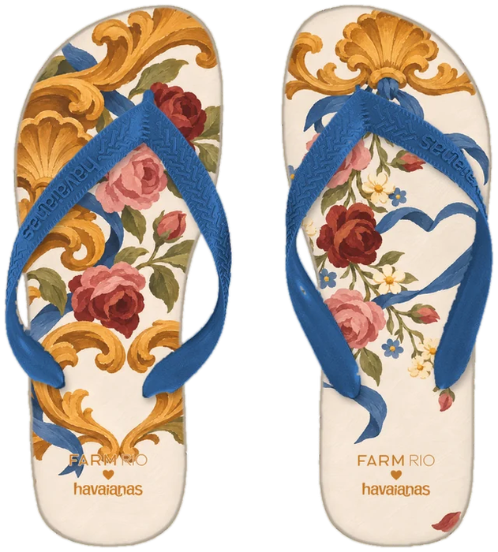
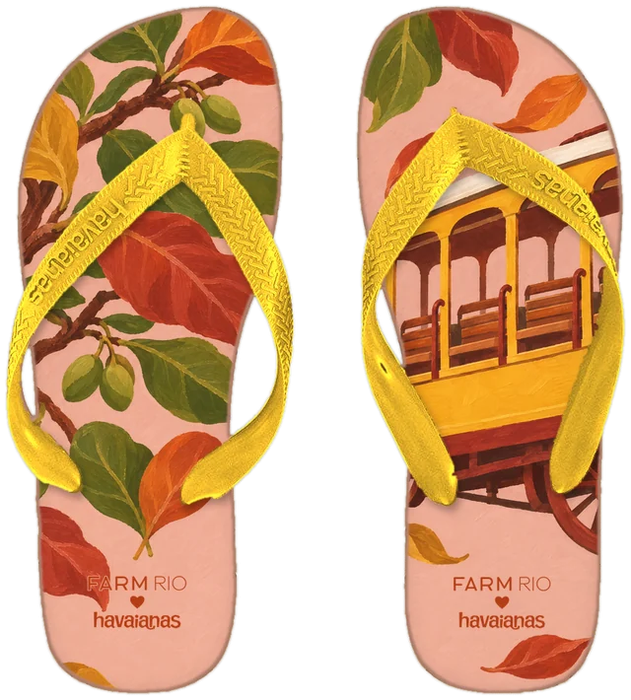
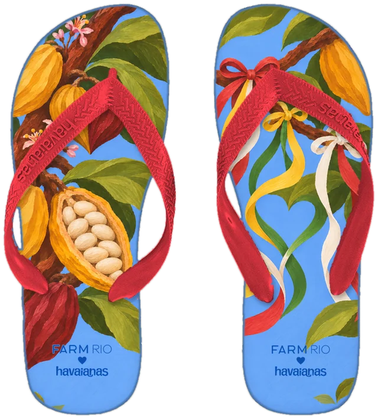
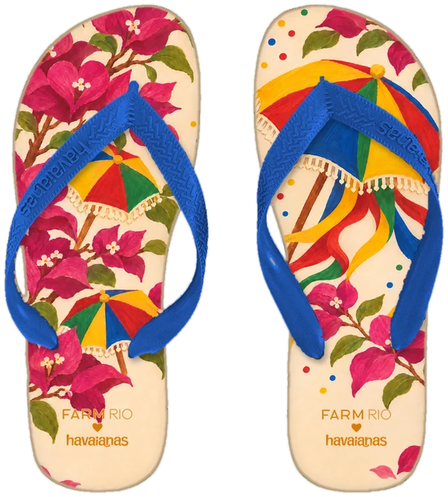

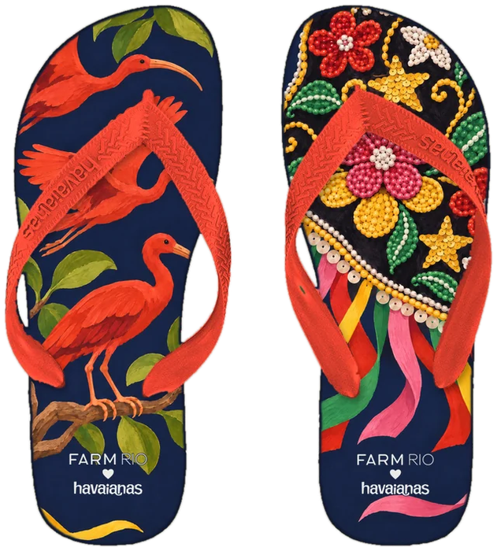
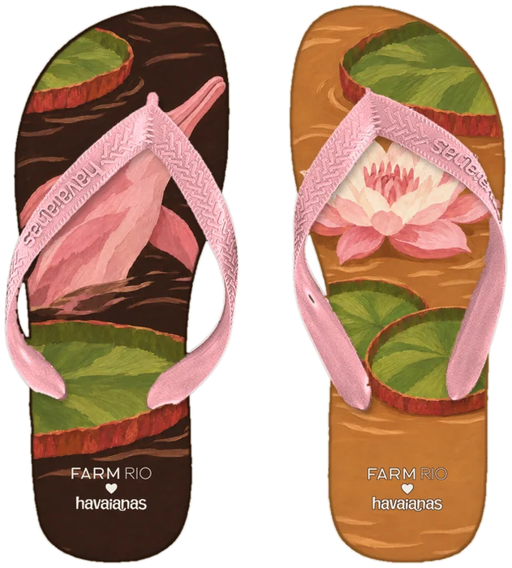
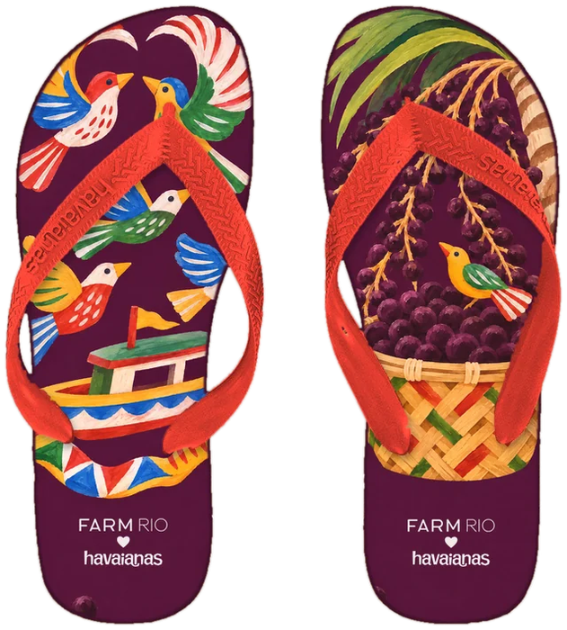
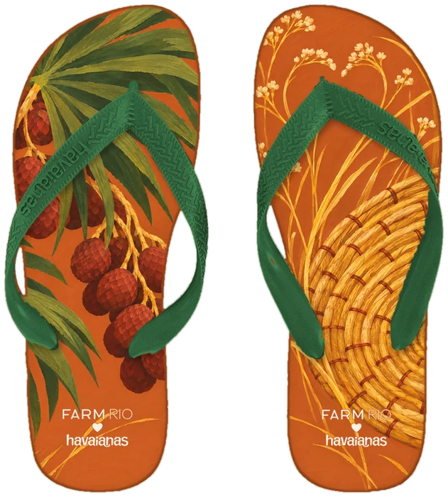
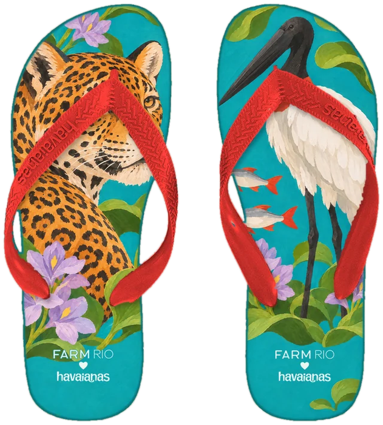

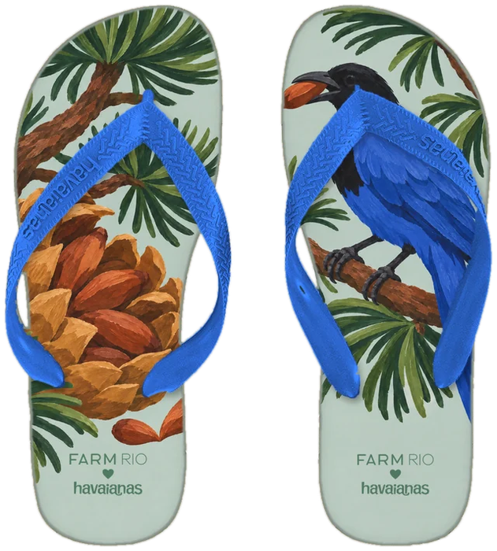


01
Minas Gerais
Barroco de Minas
Sudeste
02
Rio de Janeiro
Bonde de Santa Teresa
Sudeste
03
Bahia
Cacau e Fita
Nordeste
04
Pernambuco
Passo de Frevo
Nordeste
05
Ceará
Renda ao Vento
Nordeste
06
Maranhão
Couro de Boi
Nordeste
07
Amazonas
Encontro das Águas
Norte
08
Pará
Revoada de Miriti
Norte
09
Tocantins
Ouro do Jalapão
Norte
10
Mato Grosso do Sul
Onça de Bonito
Centro-Oeste
11
Goiás
Cavalhada
Centro-Oeste
12
Paraná
Gralha e Pinhão
Sul
13
Santa Catarina
Baleia e Ostra
Sul
14
Rio Grande do Sul
Roda de Chimarrão
Sul
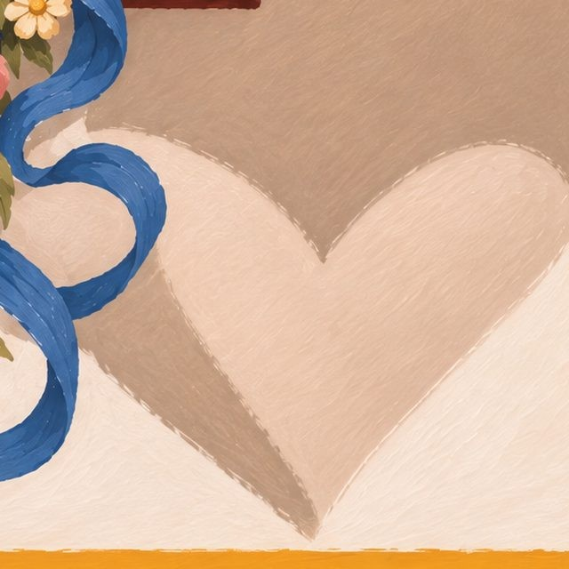
onde está o coraçãoa sombra da veneziana aberta na parede caiada
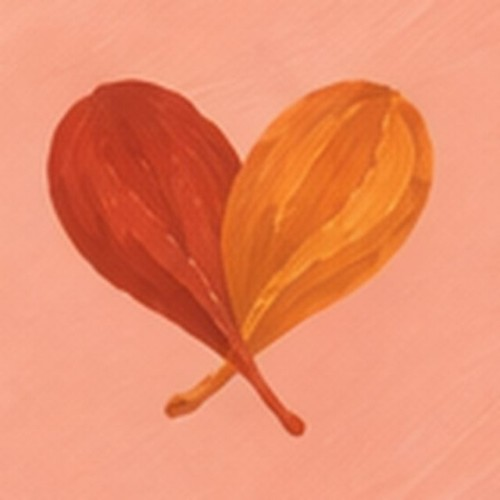
onde está o coraçãoduas folhas de amendoeira caindo juntas, ao lado do bonde
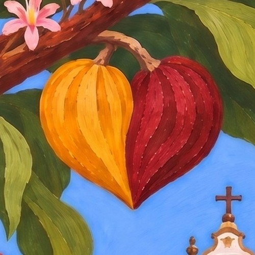
onde está o coraçãodois cacaus, um amarelo e um vinho, de pontas encostadas
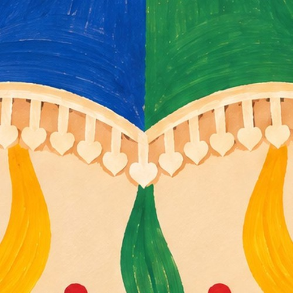
onde está o coraçãoas pontinhas da franja da sombrinha de frevo
onde está o coraçãoum ponto da renda de bilro, na barra
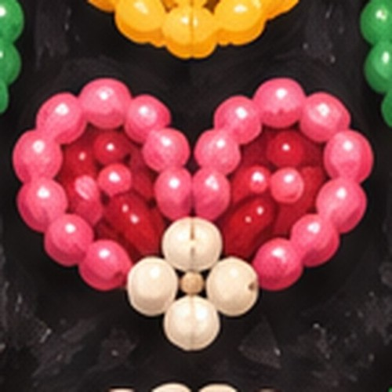
onde está o coraçãouma florzinha de miçanga no bordado do boi
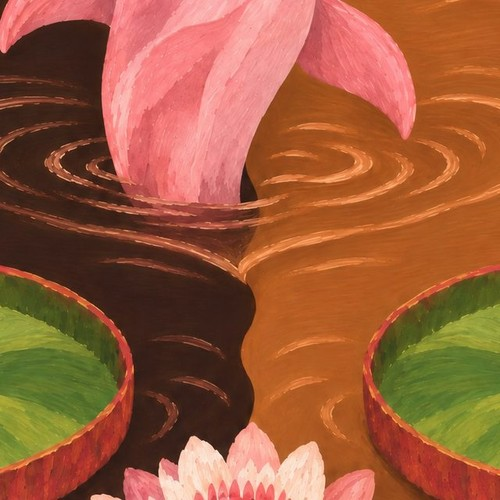
onde está o coraçãoos anéis de água em volta do boto
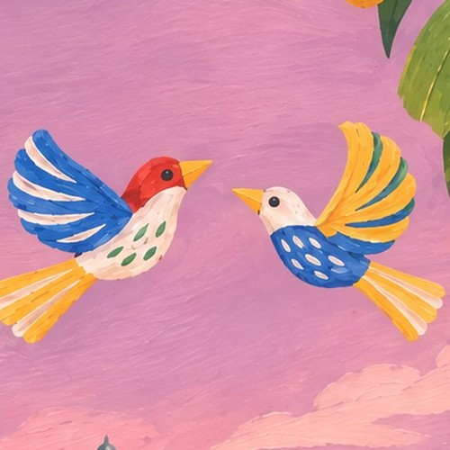
onde está o coraçãodois pássaros de miriti que voam um para o outro
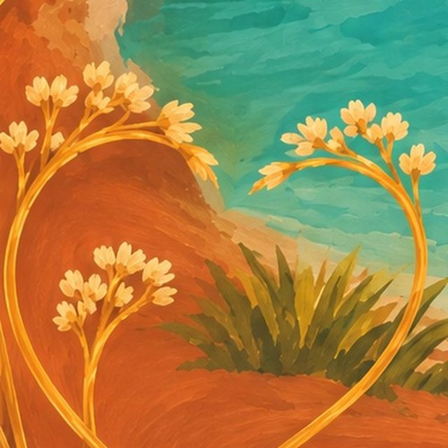
onde está o coraçãoduas hastes de capim dourado que se cruzam
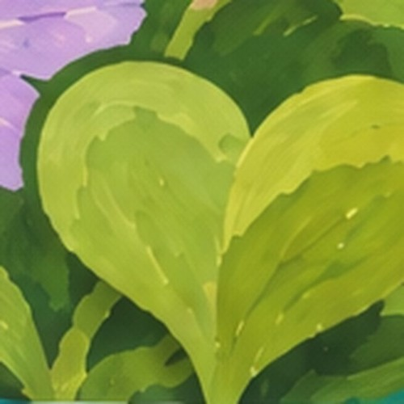
onde está o coraçãouma folha de aguapé na beira do rio de Bonito
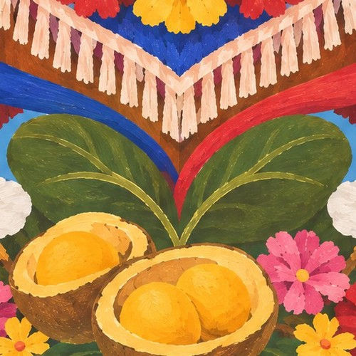
onde está o coraçãoduas folhas de pequi que se encontram sob o peito do cavalo
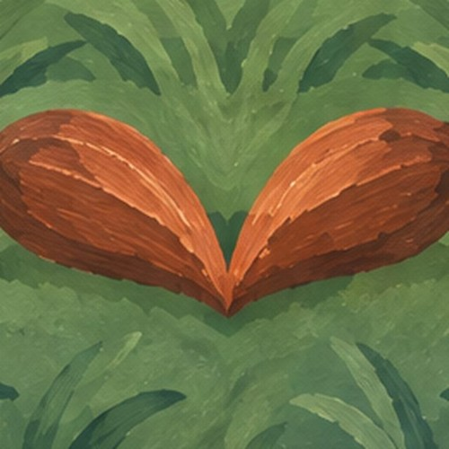
onde está o coraçãodois pinhões encostados na grama
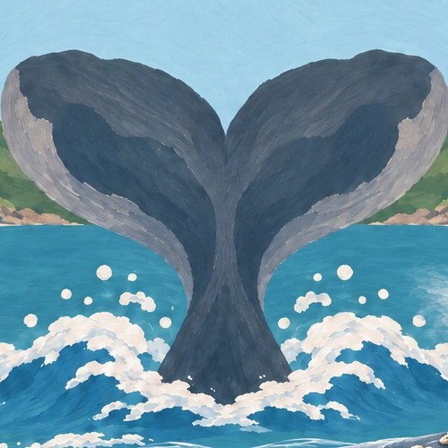
onde está o coraçãoa cauda da baleia-franca na enseada de Garopaba
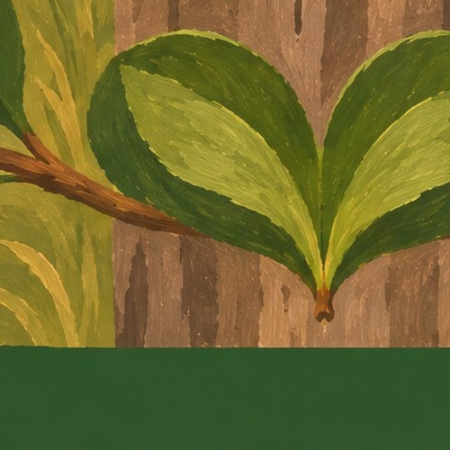
onde está o coraçãoduas folhas de erva-mate ao pé do mourão